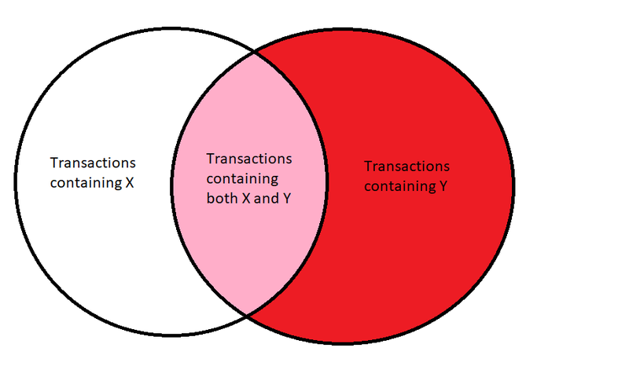

Assocation Rule Mining
Overview
Association Rule Mining (ARM) is an unsupervised machine learning technique that is designed to discover interesting relationships between variables in datasets, including those that may not be obvious at first glance to the human eye. ARM is based on a few simple statistical principles, often denoted as support, confidence, and lift.

{kind=link}
Suppose we have a dataset with \(N\) entries, and we want to determine the support, confidence, and lift for a rule \(A \rightarrow B\). Support is the relative frequency that a given rule occurs in a dataset: $$\rm{support}(A \rightarrow B) = \frac{\rm{count}(A \cap B)}{N}$$ That is we need to count how many times we see both \(A\) and \(B\) in the same entry in the dataset, and divide by the total number of entries in the dataset.
Confidence is the conditional probability that a given rule is true: $$\rm{confidence}(A \rightarrow B) = \frac{\rm{count}(A \cap B)}{\rm{count}(A)}$$ This is almost the same as the definition for support, except that now our denominator is the number of occurrences of \(A\) in the dataset, rather than the total number of entries in the dataset. Thus, the confidence will always be greater than or equal to the support, and it represents the fraction of total times A and B are found together divided by the total number of times A is found in the dataset.

Lift is the ratio of the observed support to that expected if the two rules were independent: $$\rm{lift}(A \rightarrow B) = \frac{\rm{support}(A \rightarrow B)}{P(A) \times P(B)}$$ Where \(P(A)\) and \(P(B)\) are the probabilities of \(A\) and \(B\) occurring in the dataset, respectively, i.e. \(P(A) = \frac{\rm{count}(A)}{N}\). This is the most complicated of the three measures, but it is also the most useful. When the lift is 1 this tells us the variables are independent, and thus they are not correlated and predictions cannot be drawn from such a rule. If the lift is greater than 1, however, then \(A\) and \(B\) are positively correlated, and if the lift is less than 1, then they are negatively correlated. We are mostly interested in positive correlations as a predictive tool, so we will look for rules that have a lift greater than 1.
But how do we discover which rules are most important for our dataset? To do this we will use the apriori algorithm. This is an algorithm first proposed in 1994 by Agrawal and Srikant, and was motivated by the advent of bar-code technology that, for the first time, made it possible for retailers to gather large amounts of data on consumer purchasing habits. This data is usually transaction basket data, and the apriori algorithm was designed to enable sorting through such data to find the most prominent assocations. Its main strength is in identifying which individual items in the database appear most frequently, then slowly expanding that criteria to include more and more items as long as the combinations are still sufficiently common.
Data preparation
To perform ARM, we need transaction data, and specifically we are going to transform our existing datasets into transaction basket data. As our existing data is largely quantitative, we will have to perform a few transformations to get it into a format more agreeable for ARM, as unique numbers corresponding to unique measurements are unlikely to be duplicated across entries and thus ARM will have a hard time finding any meaningful patterns. But we can easily transform our data into a more useful format by applying qualitative prescriptions to the quantitative data.
In both of our SDSS datasets, for example, we have the quantitative magnitude measurements of each object in a variety of bands, both from photometric and spectrographic observations. While we cannot use these raw numbers to do ARM, we can transform them into something more useful that can be compared across different observations. There are many different ways we could do this, but the simplest mode for discovery is to simply look at which band the object is brightest in. We can do this with both the spectral and photometric data, and we can also perform a similar analysis for determining which band the object is largest in in the dataset with sizes. Another easy categorization is to determine if an object is "close" or far — we can accomplish this with the redshift, and we will take \(z > 1\) to indicate that an object is "far" and otherwise it will be close. Finally, the SDSS data is already labelled with which kind of object something is — either star, quasar, or galaxy — and this is an existing qualititative label we can use. Note that while this means the data is labelled in a sense, we are not going to "learn" from the labels here, but instead see if there are any associations between them, and thus we are still performing unsupervised learning.
Examples of the cleaned (but untransformed) data are available on the data prep tab, but here we will show an example of what the created basket data for the SDSS datasets looks like. This example is from the dataset with sizes — the dataset without sizes looks very similar, just without the "largest size" item in each transaction.
For the model parameter search, we will perform a similar analysis. As mentioned on the data prep tab, the main goal of this class of models is to produce spectra with a single, broad emission peak, and the main things that drive the shape of the emission line are the various \(f\) terms in the model, and the inclination of the model. We'll again qualitatively categorize things to generate our basket data, and look for whether each model has a single or double peak, which \(f\) terminal dominates, and categorize the inclination as either "low" (\(i < 40^\circ\)), "medium" (\(40^\circ \leq i < 60^\circ\)), or "high" (\(i\ge 60^\circ\)). Again we will not use these categorizations to learn from the data, but instead use unsupervised learning to see what trends might be present. An example of what this generated basket transaction data looks like is in the table below:
Since the transformed data is a subset of our cleaned data these basket datasets are small enough to host in their entirety on GitHub, and the full versions are available here.
Code
We will use R to analyze our datasets with ARM and generate rules with the apriori algorithm. Fortunately R makes this easy for us to accomplish, and we can generate rules for all three datasets with just a few lines of code (also available on the GitHub repo):
# association rule mining script
library(viridis)
library(arules)
library(TSP)
library(data.table)
library(ggplot2)
library(Matrix)
library(tcltk)
library(dplyr)
library(devtools)
library(purrr)
library(tidyr)
# load datasets
MCMC <- read.transactions("MCMCbasket.csv", format = "basket", sep = ",", skip = 1)
SDSS_noSize <- read.transactions("SDSS_noSizeBasket.csv", format = "basket", sep = ",", skip = 1)
SDSS_wSize <- read.transactions("SDSS_wSizeBasket.csv", format = "basket", sep = ",", skip = 1)
# use apriori to generate rules
support_threshold <- 0.1
confidence_threshold <- 0.2
minlen <- 2
MCMC_rules <- arules::apriori(MCMC,parameter = list(support=support_threshold,confidence=confidence_threshold,minlen=minlen))
SDSS_noSize_rules <- arules::apriori(SDSS_noSize,parameter = list(support=support_threshold,confidence=confidence_threshold,minlen=minlen))
SDSS_wSize_rules <- arules::apriori(SDSS_wSize,parameter = list(support=support_threshold,confidence=confidence_threshold,minlen=minlen))
Results
To fully explore the parameter space, we use relatively low thresholds for support and confidence (0.1 and 0.2, respectively), and we will only look for rules with a minimum length of 2.
First, let's take a look at the top 15 rules for support, confidence, and lift for the SDSS dataset without sizes as it is our largest. We can accomplish this with the following code:
# sort rules by support, confidence, and lift
SDSS_noSize_rules_support <- sort(SDSS_noSize_rules, by="support", decreasing=TRUE)
SDSS_noSize_rules_confidence <- sort(SDSS_noSize_rules, by="confidence", decreasing=TRUE)
SDSS_noSize_rules_lift <- sort(SDSS_noSize_rules, by="lift", decreasing=TRUE)
Inspecting these sorted rules then gives us the following (top 15 rules for each):
Visualizing the best 10 rules for lift in the SDSS dataset with sizes gives us the following network graph: and they have the following corresponding parallel coordinates plot:
What does this show us? Well, as expected, quasars are often found very far away from us. Somewhat surprisingly, this also seems to be correlated with objects that are brightest in the UV, which is not expected as usually objects far away are redder. Upon further inspection, however, the support for this rule is pretty low, and thus it's likely an artifact of small sample size and not a true trend (the true trend is just that quasars are far!). The z band corresponds to infrared (the reddest possible band in the SDSS survey), and we see that as expected this is also correlated with an object being far away and being a quasar.
Galaxies are seen to be correlated with being close and genuinely brighter in the u imaging band, but interestingly they are also correlated with being spectroscopically brightest again in the z band. This is likely due to the fact that there are bright emission lines from Hydrogen in the infrared even at low redshifts, thus both quasars and galaxies are associated with being brightest in the z band spectroscopically.
Similar results are true for stars in the dataset with slightly lower lift, thus they are shown in the table but not in the visualizations.
Now let's repeat the steps above, but this time for the dataset with sizes. The top 15 rules for support, confidence, and lift are:
Again visualizing the best 10 rules for lift in the SDSS dataset with sizes gives us the following network graph: and they have the following corresponding parallel coordinates plot:
What does this tell us? A similar story as before — quasars are far, and interestingly with the addition of size we also gain the association that quasars appear to be associated with having a size largest in the ultraviolet. Again inspecting the support of these rules makes them questionable, but it's worth of following up on later in the project.
Looking lower in the rules list we see that stars are associated with being largest in size in the ultraviolet in addition to being close and brightest in the ultraviolet. This is expected given that the easiest stars to observe are massive, hot stars and they will naturally have most of their emission in the UV.
It's also important to note that quasars in general have the strongest associations with observables, and this is good news for the rest of the project as this indicates they have intrinsic properties that make them appear markedly different in observations. We will hopefully exploit these differences later in the project to better identify them.
Finally let's repeat the steps above for the disk-wind model data. The top 15 rules for support, confidence, and lift are:
Visualizing again the best 10 rules for lift in the disk-wind dataset gives us the following network graph: and they have the following corresponding parallel coordinates plot:
As mentioned in the data prep tab, we expected that the \(f_1\) term should be strongly associated with a single peak in the line profile, and indeed our ARM analysis confirms that these are the two best performing rules. As shown in the line profile figure on the data prep tab, the \(f_3\) term can also create a single peak, but it is not as clear as the \(f_1\) term. ARM picks up on this as well, with this set of rules being the third best performing. Interestingly, ARM does not pick up on the opposite expectations — that the \(f_2\) and \(f_4\) terms as well as lower inclinations should be associated with double peaks. It's not shown in the table here as these are the top 15 rules, but the bottom rule is actually sort of ARM picking up on this — it found a strong negative correlation (lift of roughly 0.8) between \(f_4\) and the model having a single peak, but it's curious that it does not find the corresponding positive association for a double peak. This could be a result of the random sample generation, in that the parameter space selected simple makes producing double peaks at all less likely. This idea is backed up by non of the top 15 support rules having "double peak" as an identifer.
Conclusions
ARM has provided some interesting and important insights, both in terms of confirming previously known or expected physical results and providing potential avenues of further inquiry.
In terms of validating existing results, ARM showed that quasars are on average farther away than stars and galaxies, while conversely galaxies and (especially so) stars are much closer. In the disk-wind model parameter dataset ARM validated the expectation that certain terms and inclinations were more likely than others to produce emission line profiles with single peaks.
In terms of discovering new and unexpected trends, in the SDSS data ARM revealed surprising assocations between sizes and spectroscopic brightness in the u and z bands to both quasars and galaxies that merit additional follow-up to determine if these are real trends or small sample artifacts. On the surface we might expect galaxies and quasars to be brightest in different spectroscopic bands, but ARM did not support this idea, likely because of nuanced emission line characteristics from hydrogen line series, which is an important discovery to ensure we don't use this as a criteria in discriminating between quasars and galaxies as the project progresses.